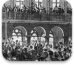

1788
Ratification of the U.S. Constitution
On May 23, 1788, South Carolina ratified the U.S. Constitution, becoming the eighth state and joining the union.
Key moments that have shaped our State.
On May 23, 1788, South Carolina ratified the U.S. Constitution, becoming the eighth state and joining the union.
South Carolina became the first state to leave union during secession on December 20th, 1860. Playing a pivotal role in the start of the Civil War.

Prominent event happened in SC that helped bring Segregation to an end such as Briggs v. Elliot, Orangeburg Massacre, and Elmore v. Rice.
South Carolina becomes one of the first states to vote in Primary's for president. Helping shape many different political legacies and campaigns.
A record 2,640,738 South Carolinians cast their ballot in the 2020 Presidential Election, Becoming the highest voter turnout in the states history.